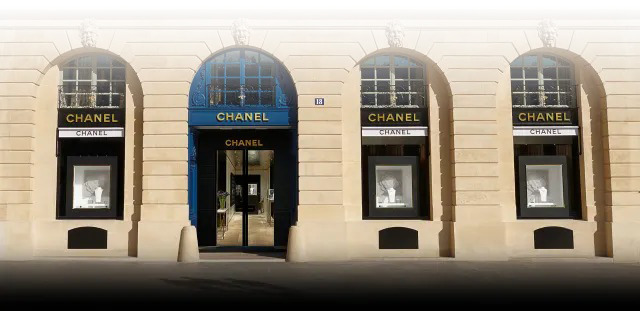

menu

방돔 광장13번지
샤넬 워치 & 화인 주얼리를 위한 플래그쉽 부티크인 방돔 광장 18번지의 맨션에서는 크리에이션 스튜디오, 하이 주얼리 공방 Patrimoine, 그리고 새로운 부티크를 만나볼 수 있습니다. 꿈이 실현되는 전설적인 공간을 만나보세요.
워치 서비스

배터리 교체 : 쿼츠 무브먼트 워치에는 집적회로가 장착되어 있으며 배터리를 통해 공급되는 에너지를 쿼츠 발진기로 전달합니다.

유지 보수 서비스 : 쿼츠 무브먼트 및 오토매틱 무브먼트 워치. 배터리와 방수 검사 시, 마모된 주요 부품을 교체하기 위해 워치를 완전히 분해합니다.

분해 수선 : 쿼츠 무브먼트 및 오토매틱 무브먼트 워치. 자동차와는 달리 워치의 기계 부품은 하루 24시간, 일주일, 일 년 365일 멈추지 않고 작동합니다.

폴리싱 : 폴리싱 작업은 메탈(스틸 혹은 귀금속)워치에 원래 상태와 가까운 광택을 부여하는 과정입니다.

브레이슬릿 : 3년에 한 번씩 교체하실 것을 권장합니다. 시간이 지남에 따라 브레이슬릿은 자연스럽게 마모되고 광택이 사라질 수 있습니다.
